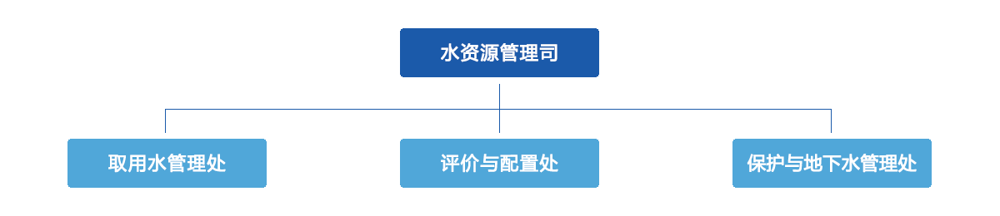

当前位置：首页>管理机构>水利部
水利部水资源管理司水利部水资源管理中心

[职责] 组织开展水资源评价有关工作，按规定组织开展水资源承载能力预警工作，指导水资源监控能力建设。组织实施流域区城取用水总量 控制。组织指导水量分配工作并监督实施。组织实施取水许可、水资源论证等制度。指导开展水资源有偿使用工作，指导水权制度建 设。按规定指导城市水务方面的有关工作。指导河湖水生态保护与修复、河湖生态流量水量管理以及河湖水系连通工作。指导地下水 开发利用和地下水资源管理保护，组织指导地下水超采区综合治理。组织编制并实施水资源保护规划，指导饮用水水源保护有关工 作，参与编制水功能区划和指导入河排污口设置管理工作。承担实施最严格水资源管理制度相关工作，负责最严格水资源管理制度考 核。组织编制并发布国家水资源公报。承办部领导交办的其他事项。
| 司长 | 副司长 | 副司长 | 处室 |
| 杨得瑞 | 郭孟卓(正司级) | 杜丙照 | 取用水管理处 评价与配置处 保护与地下水管理处 |